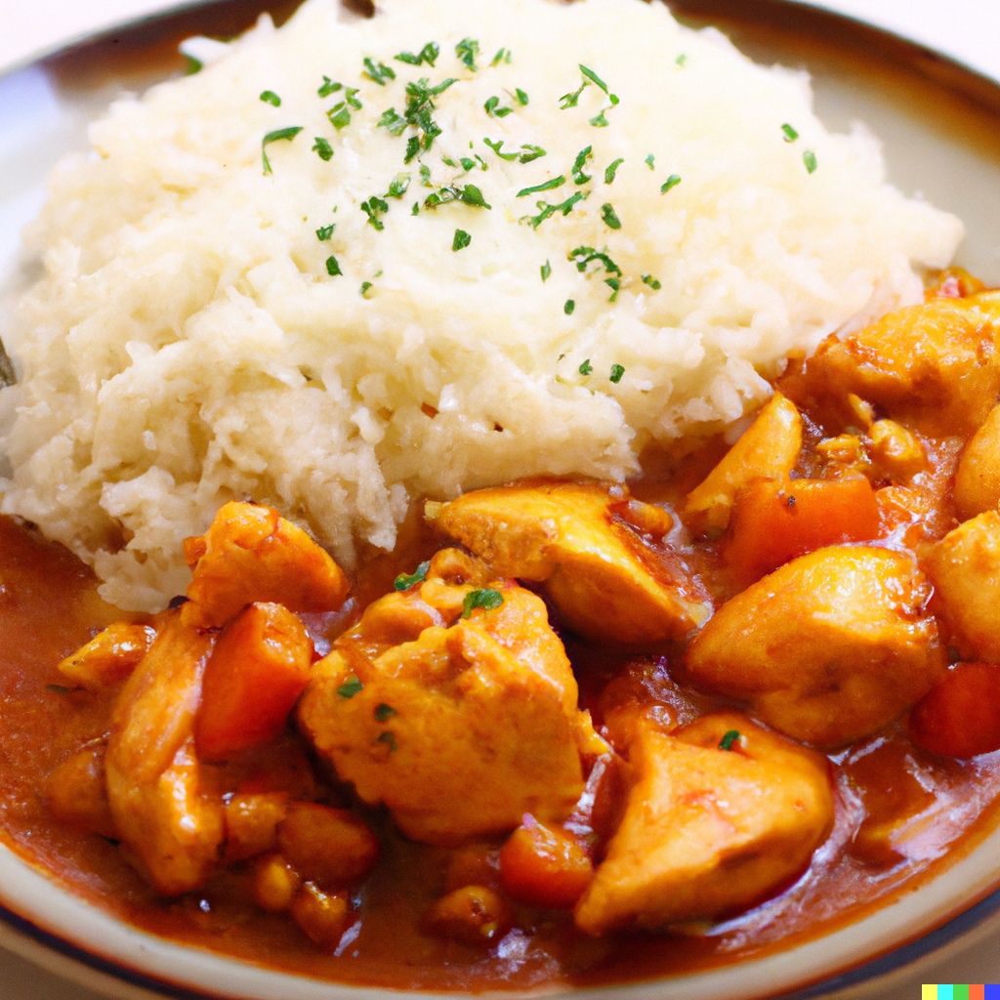

Chicken curry
Chicken curry is a savory dish made with chicken, vegetables, and spices in a creamy sauce.

Spaghetti Carbonara
Spaghetti Carbonara is a classic Italian pasta dish made with spaghetti, eggs, bacon or pancetta, and Parmesan cheese.

Chicken Fajitas
Chicken Fajitas are a Tex-Mex dish made with grilled chicken, peppers, onions, and tortillas.

Garlic Butter Shrimp
Garlic Butter Shrimp is a quick and easy seafood dish made with succulent shrimp cooked in a buttery garlic sauce.

Banana Oatmeal Pancakes
Banana oatmeal pancakes are a simple and nutritious breakfast option made with mashed bananas, rolled oats, and eggs.
They are easy to make, and can be topped with a variety of ingredients.

Peanut Butter Banana Toast
A slice of bread is toasted and topped with a layer of creamy peanut butter, then sliced bananas are arranged on top.
It's easy to make and satisfying to eat, making it a favorite for many people.

Scrambled eggs with spinach and tomatoes
Scrambled eggs with spinach and tomatoes is a quick and healthy breakfast recipe that combines fluffy scrambled eggs with fresh spinach and cherry tomatoes.

Baked salmon
Baked salmon is a healthy and flavorful dish that can be seasoned with herbs, spices, or citrus fruits and cooked in the oven until tender and flaky.
It can be served with a side of vegetables.